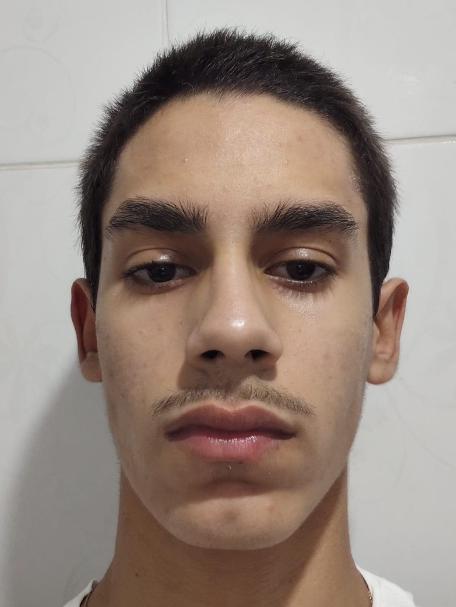
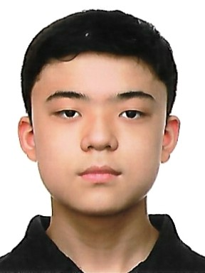
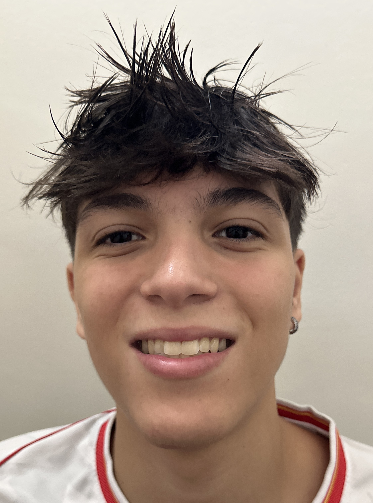
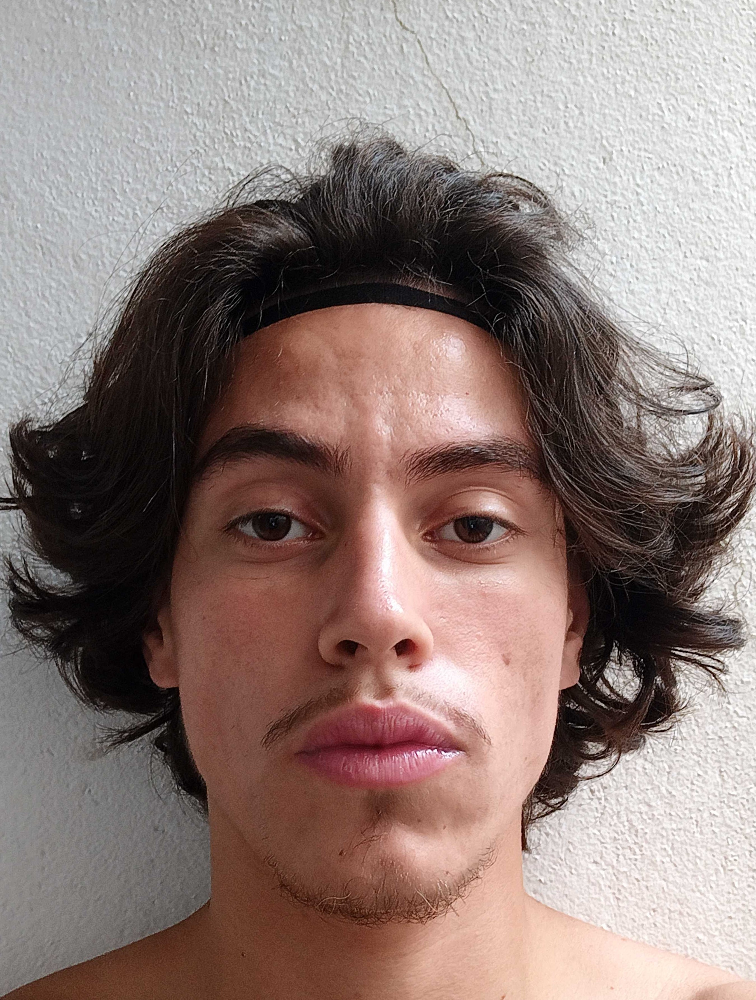
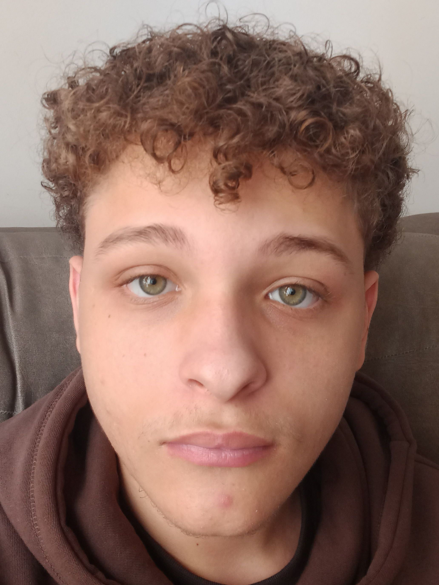
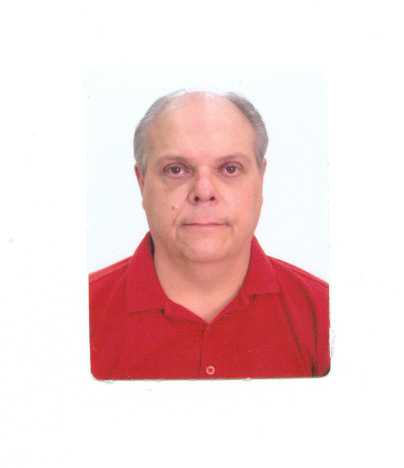
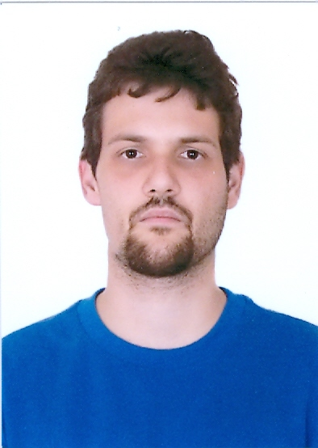
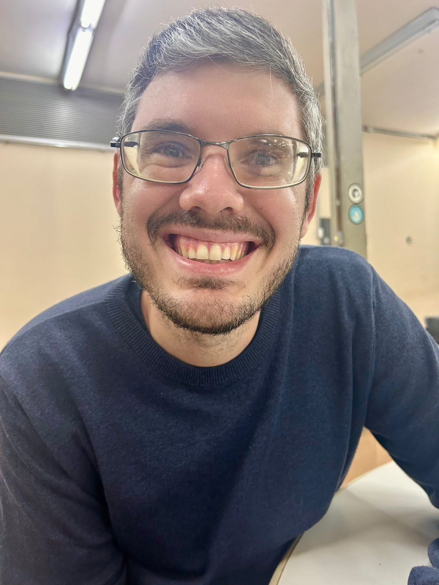

PROJETO INTEGRADOR
PROJETO INTEGRADORParticipantes do Projeto
-

BRENO DE OLIVEIRA FONSECA
GU3081664 -

FERNANDO KENZO YAMAGUCHI
GU3079708 -

LUCAS AMORA DA FONSECA
GU3080706 -

RAPHAEL FRANCISCO RODRIGUES JANUARIO
GU3079252 -
RENATO FRANCO GONÇALVES JUNIOR
GU3078621 -

VITOR HUMEL SILVA
GU3080579
Desenvolvimento do Projeto
| INTEGRANTE | DESENVOLVIMENTO DO PROJETO (1º SEMESTRE) | DESENVOLVIMENTO DO PROJETO (2º SEMESTRE) |
|---|---|---|
| Breno | Contribuiu com o estudo e a descrição do funcionamento do sensor LDR. | Desenvolveu o JavaScript da página. |
| Fernando | Contribuiu com a caracterização e descrição da plataforma Arduino utilizada no projeto. | Desenvolveu os textos das páginas. |
| Lucas | Foi responsável pela pesquisa e descrição do display LCD 16x2. | Desenvolveu os textos das páginas. |
| Raphael | Atuou na formulação, planejamento e estruturação inicial do projeto. | Desenvolveu o JavaScript da página. |
| Renato | Foi responsável pelo desenvolvimento matemático relacionado à conversão dos sinais elétricos obtidos pelo sensor em valores de luminescência. | Desenvolveu o HTML da página. |
| Vitor | Participou da análise e descrição das portas e conexões empregadas no sistema. | Desenvolveu o CSS da página. |
| TODOS | Discussões técnicas, pesquisa bibliográfica, desenvolvimento da estrutura do trabalho, revisão crítica do conteúdo e aprovação da versão final submetida. | Montagem do protótipo e aprovação do site. |
Professores auxiliares
-

MAURICIO CAPELAS
GU2146961 -

DENNIS LOZANO TOUFEN
GU1704320 -

JORDY LUIZ CERMINARO SPACCA
GU2009434 -
LUCINEIDE NUNES PIMENTA
GU1279239